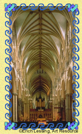

|
 |
The Gothic style is lighter, taller, and more graceful than the Romanesque style that dominated European architecture from about 800 to the 1100's. Critics have praised the Gothic style for creating an exhilarating sensation of God's everlasting glory and a reassuring impression of His divine plan for the universe. Many worshipers have commented that the soaring heights of Gothic churches help them feel closer to heaven. Pointed arches In contrast to the blunt, rounded arches used for centuries, this graceful variation draws the eye upward, pointing the spirit toward heaven. Ribbed vaults This structural development has enabled architects to take buildings to greater heights than ever before. For centuries, thick stone columns were used to support arches. These columns have been replaced by clusters of slim pillars called piers. The piers extend to the ceiling and then curve outward like the ribs of an open umbrella. The space between the ribs is filled in with bricks or plaster. Stained-glass windows A stained-glass window consists of pieces of colored glass arranged to form figures or patterns. A well-made stained-glass window glows and sparkles with color in the rays of the sun, adding to the beauty of the church interior. The images in the glass make a strong impression on viewers and serve as a powerful means of teaching religious ideas. Flying buttresses Flying buttresses are arched supports of brick or stone built against the outside walls of a building. They reduce the amount of solid wall space needed for support and thus permit the use of large windows that allow light to stream into the interior. First used on the Cathedral of Notre Dame in Paris in about 1175, they actually may have been originally invented to provide exterior support for the high ribbed vaults until the structures were firmly set. However, fears that the ribbed vaults would not be self-supporting led to their buttresses being left in place permanently. Unified sense of space The way in which space is conceived is one of the great differences between the Gothic style and that of churches built in the 1000's and the early 1100's. Builders created space in earlier buildings by adding bays, unit by unit. But the Gothic architect conceives a church as one unit of space that is subdivided into units. |